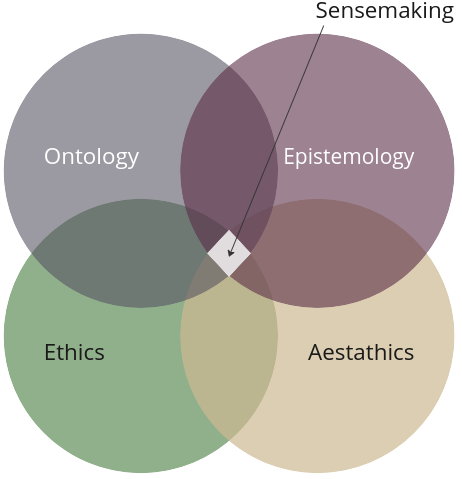

Copilot code says: Sensemaking is the process of creating meaning from data or information. It involves interpreting patterns, identifying trends, and making connections between disparate pieces of information to form a coherent narrative. Sensemaking is a critical skill in a world inundated with data, as it allows individuals to extract insights and derive value from complex datasets.
